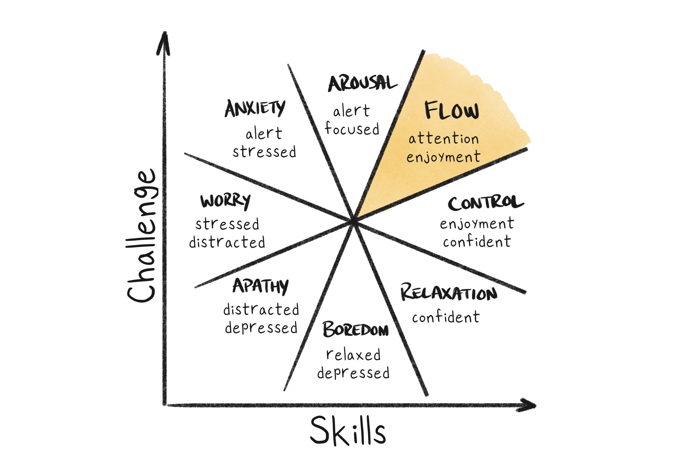
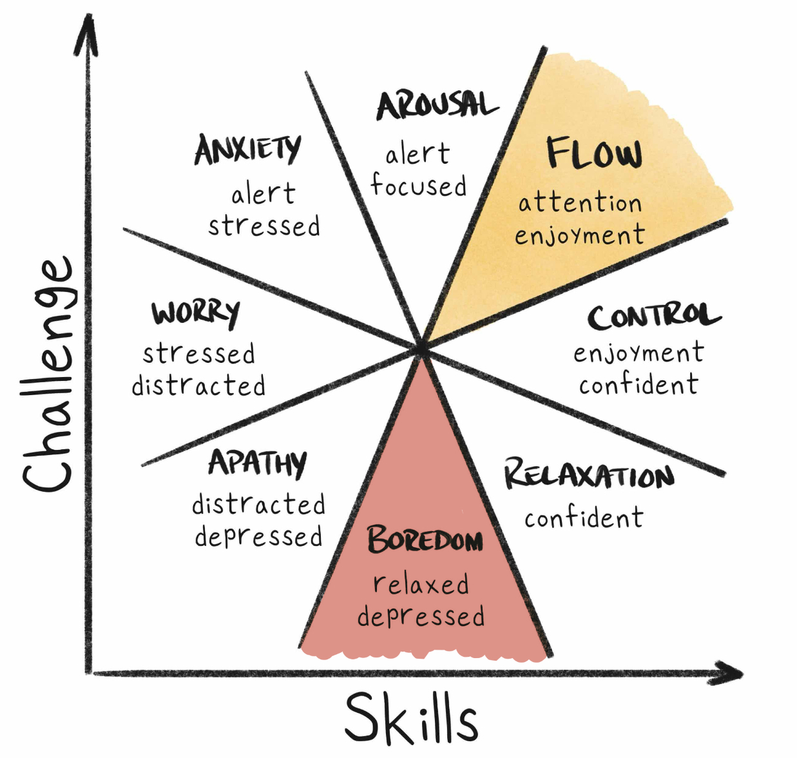
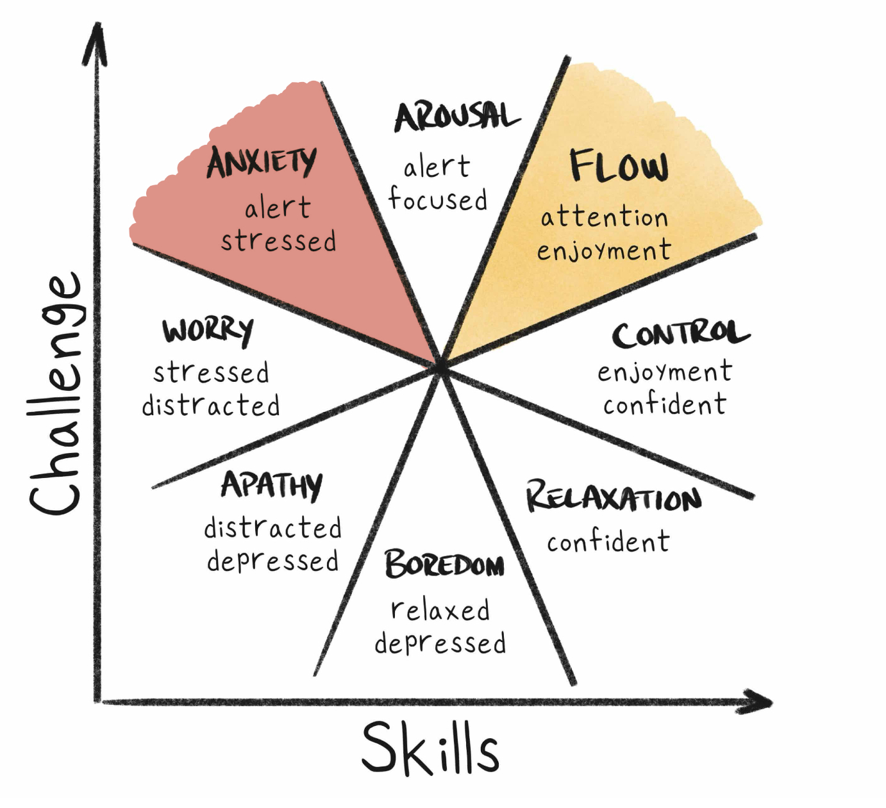
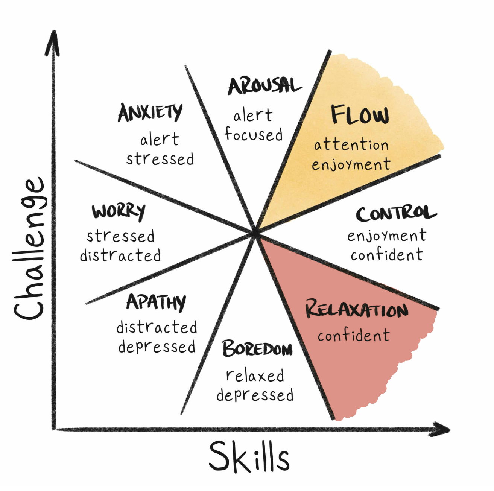
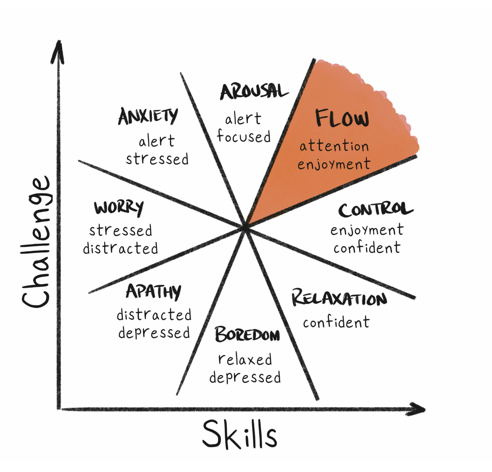

Major Decisions
Finding my Flow

When I was 18 years old, I was dead set on teaching English to high schoolers. Now, nearly five years later, I’m finishing up a bachelor’s degree in data science. Looking back, I’ve often asked myself what caused me to change my major five times and go through this unconventional path. The conclusion I’ve come to is that I was searching for my “flow.”
This Flow State is what makes people lose all sense of time, completely engaged in a task they truly love. It’s something I never thought I would find in a major or a job, but was the driving force behind all of the major decisions I’ve made in my college career. Hopefully, reflecting on my journey will help you in your path to discover what brings you that beautiful sense of total attention and enjoyment.
Major 1 - English Education
When I graduated high school, as many members of the Church of Jesus Christ of Latter-day Saints do, I applied to BYU and reluctantly put in a back-up application to BYU-Idaho. When I was accepted to both universities, I chose BYU without a second thought and excitedly declared my major as English education.
For the entirety of Fall Semester 2020, I could be found in the McKay library with my nose deep in book after book, studying my life away. And I loved it! English was fascinating, my teachers were brilliant, and I couldn’t wait to come back to all of it after serving a mission for my Church. For me, this was a state of flow. It was challenging but I thrived on rising up to the task.
Much to my dissapointment, however, during my mission I felt very strongly like I needed to transfer to BYU-Idaho. So, I left behind the flow, shopping malls, and my dream school and moved to snowy Rexburg, Idaho.
Major 2 - English
My first semester at BYU-Idaho (Fall 2022) I was ecstatic to be hired for a position as a student writer in the Executive Office. I also quickly learned that the pace in Rexburg was a bit slower than what I was used to coming from Provo. My English education classes lacked the depth of what I’d taken previously. I was stuck in boredom: a low challenge, medium skills zone. I desperately wanted out. In an attempt to increase the challenge, I dropped the education and changed to English.

This didn’t exactly work as hoped. As the semester progressed, I felt that I was learning more at my work than I was in the classroom. Work was challenging, engaging, and new. Classes were similar to the IB class I’d already taken and felt like more of a review than anything else. I was still trapped in the boredom zone.
The few classes I really enjoyed were the GE math courses I was taking. I remember talking to my brother, a mechanic engineer recently graduated from BYU, about some of the math classes he was in. As we talked about our shared passion for math, he asked me why on earth I was studying English when I loved math so much! That conversation really made me think. Less than a week later, I had changed my class schedule for the following semester and switched my major to applied math.
Major 3 - Applied Math
Now here was a major that pushed me in all the best ways. I was back in calculus, learning to write proofs, and even introduced to some basic programming in Python. It was new and exciting! I felt like I was getting the most out my college education.

I stuck with applied math for a few semesters. As I got close to graduation, started taking Junior- and Senior-level classes, and looked at the remaining graduation requirements, I quickly began to burn out. The challenge was too much, and I just lost interest in the material. I didn’t want to put in the time to get my skills where they needed to be. I fell into a state of anxiety, and once again started looking for a way out.
Major 4 - Math Education

During this time, I was reminded of why I had wanted to be a teacher in my early college semesters. I decided to try math education, and was quickly reminded of why I had left education behind as a major. There just wasn’t enough of a challenge to excite me and create a good space for growth.
Major 5 - Data Science
I was still working in the Executive Office during this newest major search, but my job had evolved quite a bit over the previous year and a half. I was being given fewer writing assignments and more data-related tasks. During this semester in math ed specifically, I was spending weeks working directly with one of the data teams on campus on a project for the president and vice president of the university. I would spend 9 hour days deep in the numbers and was surprised to discover that the time passed more quickly that it ever had before. 
I felt a wonderful combination of high challenge and high skill that can only be described as flow! I realized with excitement that I could make this the focus of my studies and my job for the rest of my life. As I looked into the various analytical majors offered at BYUI, data science kept jumping out at me. And so I made the switch.
Grand Finale
Now, I am just one semester away from graduating! I’ve stuck with this major longer than any other and will stick with it to the end. The magic recipe was high challenge and high skills. Once I found a major that pushed me in a way that made me want to stretch to face each new challenge, school stopped being about the grades and started being about the knowledge.
If I had one piece of advice for people at the beginning of this journey, it would be to recognize where you are in this Flow State chart and to not give up until you’ve landed squarely in the flow. It’s possible to really love what you do! Don’t be willing to settle for anything less.